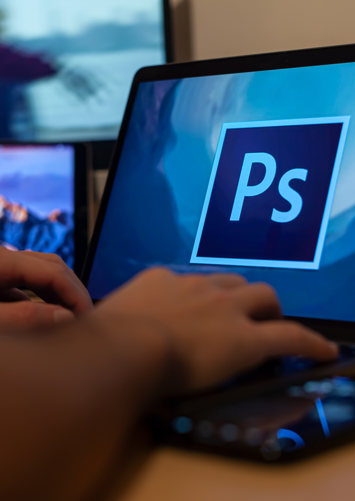

Hvad er en multimediedesigner?
Multimediedesigner er en 2-årig kort videregående uddannelse i udvikling af multimedie-produktioner. I uddannelsen kommer du til at arbejde med billedebehandling og redigering, webdesign, UX/UI design, videoredigering og grafisk design.
Hvad kan du forvente?
Du kan forvente at arbejde meget med mange forskellige progammer som f.eks. Adobe, som du får gratis adgang til gennem uddannelsen. Du kommer bl.a. til at arbejde med Photoshop, Premiere Pro, Illustrator, Indesign, Figma, HTML og CSS, Visual Studio Code, WordPress og MAMP.
Hvordan ser semesterne ud?
Uddannelsen er delt op i 4 semestre som hver ender med en eller to eksamener. På 1. semester bliver du introduceret til hvad det betyder at være multimediedesigner og de relevante programmer. 2. semester forbereder dig på at skulle vælge et linjefag på 3. semester, og du bliver derfor introduceret til de forskellige kompetencer man lærer på de forskellige linjer. På 3. semester kommer du ud på dit linjefag samt vælger et valgfag. På 4. semester skal du i praktik og arbejde på din afsluttende eksamen.
Hvad er karrieremulighederne?
Der findes mange karrieremuligheder som du kan tage efter du er blevet færdig med uddannelsen. Det kan f.eks. være:
- Filmdirektør
- Videoredigerer
- Hjemmesidedesigner
- Grafisk designer
- UX designer
- Billedbehandler
- Logo designer